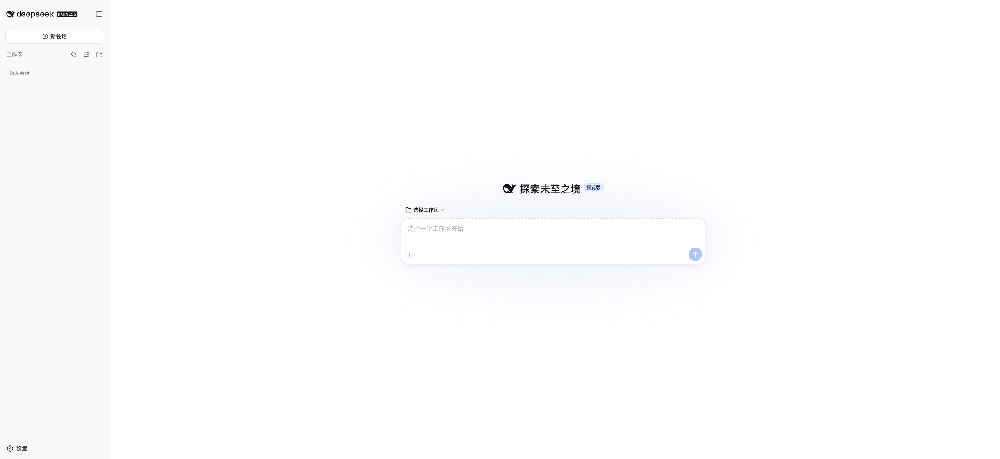
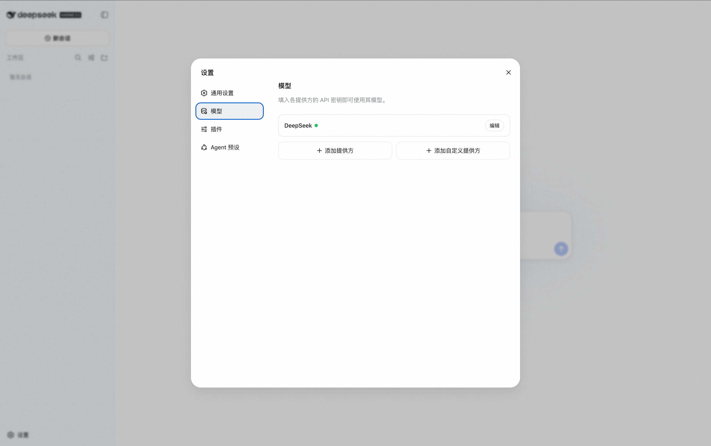
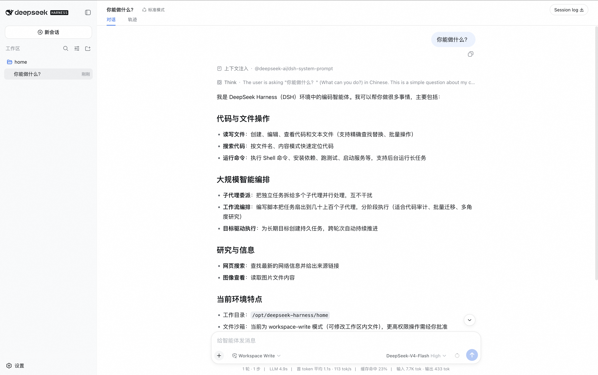

Deepseek-Harness社区版计算巢部署文档
服务说明
Deepseek-Harness社区版是 DeepSeek AI 开源的 Agent Harness，提供浏览器 Web UI，可在页面中配置 DeepSeek 或 OpenAI 兼容模型，并选择工作区后运行代码代理任务。本计算巢服务采用单机 ECS 部署，自动安装 Node.js、DeepSeek Harness Web UI 和 Nginx 反向代理。
该服务本身没有登录界面，因此访问入口已开启计算巢安全代理：用户从计算巢控制台的服务实例输出访问 Web UI，ECS 安全组仅放行安全代理出口网段访问 3080 端口，不直接对公网开放无鉴权 Web 服务。
服务架构
本服务模板构建出的服务为单机 ECS 部署。DeepSeek Harness Web UI 在实例内部监听 127.0.0.1:13080，Nginx 监听 0.0.0.0:3080 并反向代理到本地 Web UI，计算巢安全代理基于服务实例输出地址访问 3080 端口。

计费说明
通过此服务模板构建服务不产生费用。用户部署服务实例时，资源费用主要涉及：
- ECS 实例规格
- 系统盘容量
计费方式支持按量付费和包年包月，预估费用会在部署前实时展示。
RAM账号所需权限
若使用 RAM 用户创建服务实例，需要在创建服务实例前为该 RAM 用户添加相应权限。
| 权限策略名称 | 备注 |
|---|---|
| AliyunECSFullAccess | 管理云服务器 ECS 的权限 |
| AliyunVPCFullAccess | 管理专有网络 VPC 的权限 |
| AliyunROSFullAccess | 管理资源编排 ROS 的权限 |
| AliyunComputeNestUserFullAccess | 管理计算巢服务用户侧资源的权限 |
服务实例部署流程
部署步骤
- 打开计算巢服务实例创建页面，选择部署地域并填写实例规格、实例密码和网络参数。
-
确认询价明细后点击 下一步：确认订单，同意服务协议并点击 立即创建。
-
等待服务实例部署完成。部署完成后，在服务实例详情页的 输出 区域查看
deepseek_harness_3080_url。 -
点击输出中的安全代理访问地址打开 Web UI。页面应展示 DeepSeek Harness 的新会话、设置和选择工作区入口。



首次使用配置
Deepseek Harness Web UI 打开后还不能直接发起会话，必须先完成模型和工作区配置。
1. 配置大模型
- 点击左下角 设置。
- 进入 Models / 模型 配置。
- 二选一完成模型接入：
- 填写 DeepSeek API Key，使用 DeepSeek 官方模型。
- 添加 OpenAI 兼容模型提供方，填写 Provider ID、Base URL、API 协议、API Key，并至少配置一个模型。
- 保存配置。
未配置模型 API Key 时，Web UI 可以打开，但无法正常发起模型请求。
2. 选择工作区
- 返回主页面，点击 选择工作区。
- 选择需要让 Agent 操作的工作区目录。
- 工作区选择完成后，新会话输入框才可正常使用。
服务实例已在 ECS 上准备 /opt/deepseek-harness/workspace 作为默认工作目录，DeepSeek Harness 的会话、凭据、存储和附件数据保存在 /opt/deepseek-harness/dsh-home 下。
运维说明
如需登录 ECS 排查服务状态，可使用实例密码远程连接 ECS 后执行：
sudo systemctl status deepseek-harness.service
sudo systemctl status nginx.service
sudo journalctl -u deepseek-harness.service -n 100 --no-pager
服务启动脚本位于 /opt/deepseek-harness/bin/start-dsh-web，应用日志位于 /opt/deepseek-harness/logs/service.log。
注意事项
- DeepSeek Harness 当前为 developer preview，上游未来版本可能存在破坏性变更。
- 用户在 Web UI 中配置的模型 API Key 会保存在服务实例本地持久化目录中，请妥善管理实例访问权限。